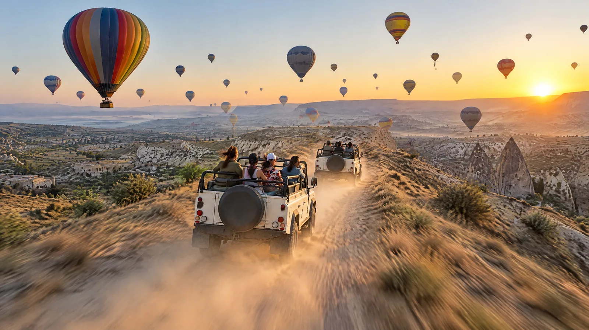
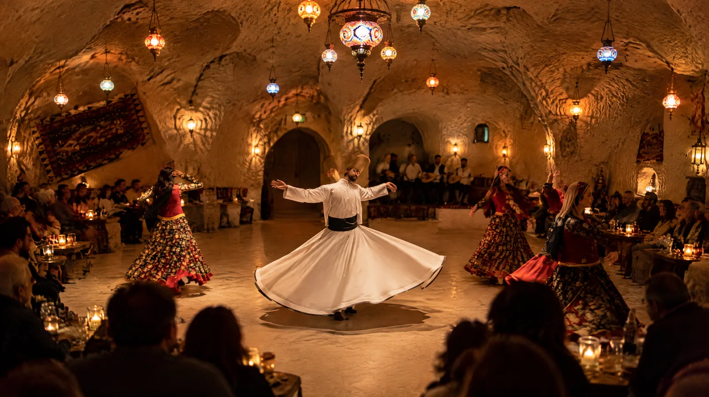

五种体验，
一个团队。
热气球、吉普越野、ATV、骑马与土耳其之夜，全部由我们安排。选一项，或与我们一起规划您的一天。




卡帕多奇亚
影像。
热气球、ATV、吉普越野、骑马与土耳其之夜。点击图片可放大。


我们生于格雷梅，也生活在这里。
Cappadocia Vista Tours 是一个家族团队。哪天早晨热气球能起飞、哪个山谷几点最美、哪家餐厅值得一去，我们抬头就知道。我们在机场迎接客人，安排入住自家洞穴酒店，以热气球开启一天，以土耳其之夜结束。

- 小团出行每团最多 8 人，没有拥挤的大巴。
- 天气保障热气球因天气停飞，全额退款或改期。
- 本地导游导游都是格雷梅人，不背稿子，只讲故事。
为什么选择 Cappadocia Vista
我们不卖行程，
我们不卖行程，
我们为您规划每一天。
告诉我们“我们有三天”，热气球、山谷、夜晚与休息时间，由我们为您安排。一个联系人、一个 WhatsApp、一张账单。
- 01
从机场到告别
开塞利或内夫谢希尔机场接机、酒店、行程与返程接送，一站式安排。
- 02
日出时的最佳位置
与热气球公司合作多年，优先获得最佳吊篮位置与飞行员。
- 03
避开人潮的时段
日落时的玫瑰谷，开门时的格雷梅博物馆。
- 04
照片由我们来拍
导游在每次行程中拍照，当晚通过 WhatsApp 发给您。
- 05
用您的语言沟通
中文、英语、土耳其语与西班牙语。留言后一小时内回复。
- 06
正规持牌，全程保险
TÜRSAB 17102 持牌旅行社，车辆投保，导游持证。


我们的酒店
在洞穴房醒来，
在洞穴房醒来，
在阳台看热气球升空。
我们位于格雷梅高处的洞穴酒店，像家一样接待客人。房间凿于岩石之中，早餐在露台，清晨五点热气球就在眼前。参加我们行程的客人，可与我们一起规划住宿，欢迎咨询。
咨询酒店 →
预订与咨询
给我们留言。
告诉我们日期与人数，当天回复。
Cappadocia Vista Tours · 土耳其 内夫谢希尔 格雷梅
TÜRSAB 17102